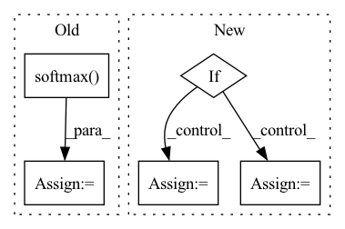

Pattern ID :691
Before Change
q, k, v = map(lambda t: rearrange(t, "b (h c) x y -> b h c (x y)", h = self.heads), qkv)
q = q.softmax(dim = -2)
k = k.softmax(dim = -1)
q = q * self.scale
context = torch.einsum("b h d n, b h e n -> b h d e", k, v)After Change
h = self.heads
x = self.norm(x)
if exists(self.time_cond):
assert exists(time)
scale, shift = self.time_cond(time).chunk(2, dim = -1)
x = (x * (scale + 1)) + shift
qkv = self.to_qkv(x).chunk(3, dim = -1)
q, k, v = map(lambda t: rearrange(t, "b n (h d) -> b h n d", h = h), qkv)In pattern: SUPERPATTERN
Frequency: 3
Non-data size: 5
Instances Fragment ID: 2348450
Project Name: lucidrains/recurrent-interface-network-pytorch
Commit Name: 5cd08b2823cfe105785a525aea43a7396fea07e9
Time: 2022-12-24
Author: lucidrains@gmail.com
File Name: rin_pytorch/rin_pytorch.py
M Class Name: LinearAttention
N Class Name: LinearAttention
M Method Name: forward(3)
N Method Name: forward(2)
M Parent Class: nn.Module
N Parent Class: nn.Module
M File Name: rin_pytorch/rin_pytorch.py
N File Name: rin_pytorch/rin_pytorch.py
M Start Line: 114
M End Line: 126
N Start Line: 136
N End Line: 157
Before Change
hidden_states.size(-1))[:, -1, :]
logits = self.classifier(vec)
prob = F.softmax( logits)
if labels is not None:
loss_fct = CrossEntropyLoss()
loss = loss_fct(logits, labels)
return loss, probAfter Change
def forward(self, source_ids=None, labels=None):
source_ids = source_ids.view(-1, self.args.max_source_length)
if self.args.model_type == "codet5":
vec = self.get_t5_vec(source_ids)
elif self.args.model_type == "bart":
vec = self.get_bart_vec(source_ids)
elif self.args.model_type == "roberta":
vec = self.get_roberta_vec(source_ids)
logits = self.classifier(vec)
prob = nn.functional.softmax(logits) Fragment ID: 2348452
Project Name: salesforce/codet5
Commit Name: 0bf3c0c43e92fcf54d9df68c793ac22f2b60aad4
Time: 2021-10-29
Author: 337111657@qq.com
File Name: models.py
M Class Name: CloneModel
N Class Name: CloneModel
M Method Name: forward(3)
N Method Name: forward(3)
M Parent Class: nn.Module
N Parent Class: nn.Module
M File Name: models.py
N File Name: models.py
M Start Line: 111
M End Line: 125
N Start Line: 103
N End Line: 116
Before Change
tgt_embedding = tgt_embedding + tgt_embedding_p
scores = torch.matmul(src_embedding.transpose(2, 1).contiguous(), tgt_embedding) / math.sqrt(self.emb_dims)
scores = torch.softmax( scores, dim=2)
// b x points x points
feat1_corr = torch.matmul(feat2, scores.transpose(2, 1).contiguous())
rotation_ab, translation_ab = self.head(feat1, feat1_corr)
After Change
tgt_embedding = tgt_embedding + tgt_embedding_p
rotation_ab, translation_ab = self.head(src_embedding, tgt_embedding, src, tgt)
if self.cycle:
rotation_ba, translation_ba = self.head(tgt_embedding, src_embedding, tgt, src)
else:
rotation_ba = rotation_ab.transpose(2, 1).contiguous()
translation_ba = -torch.matmul(rotation_ba, translation_ab.unsqueeze(2)).squeeze(2)
T_12 = rt_to_transformation(rotation_ab, translation_ab.unsqueeze(2)) Fragment ID: 2348468
Project Name: paul007pl/mvp_benchmark
Commit Name: cb5622fec6ad947b57a83033563a402533978c61
Time: 2021-07-12
Author: panliang_de2007@qq.com
File Name: registration/models/dcp.py
M Class Name: Model
N Class Name: Model
M Method Name: forward(5)
N Method Name: forward(5)
M Parent Class: nn.Module
N Parent Class: nn.Module
M File Name: registration/models/dcp.py
N File Name: registration/models/dcp.py
M Start Line: 270
M End Line: 294
N Start Line: 394
N End Line: 425